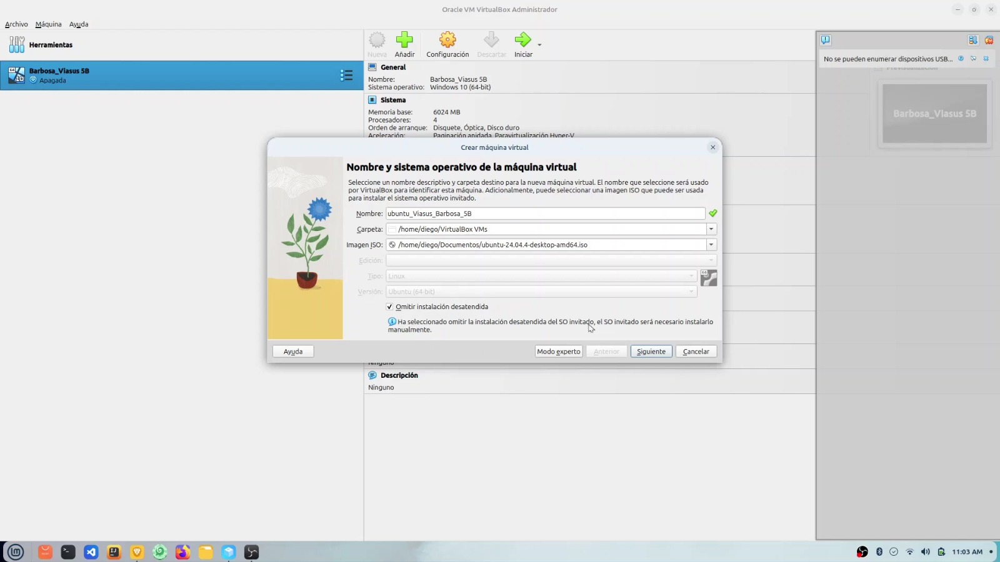
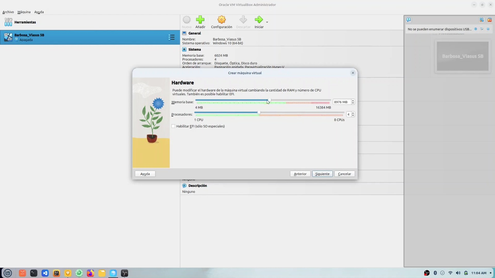
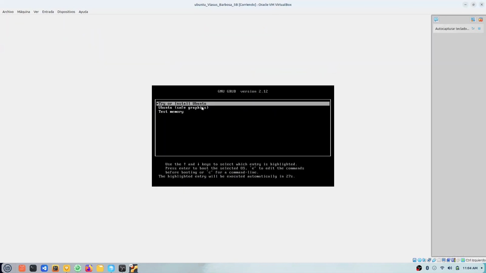
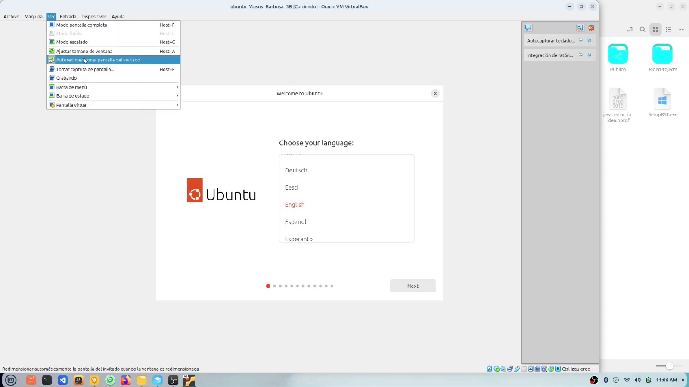
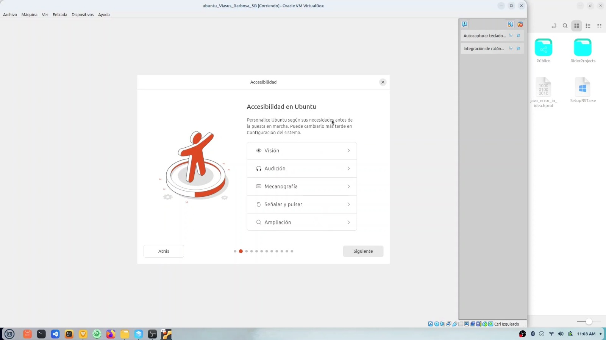
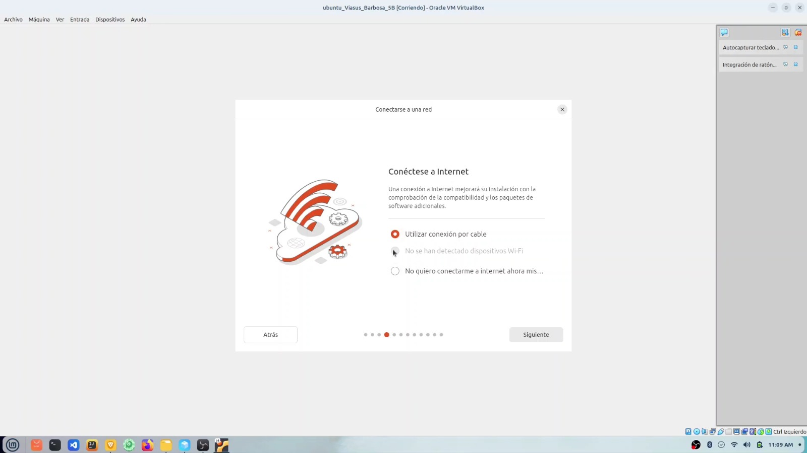
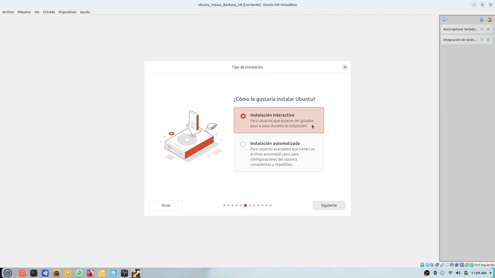
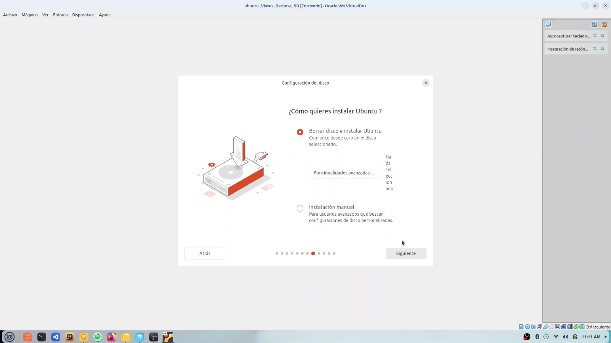
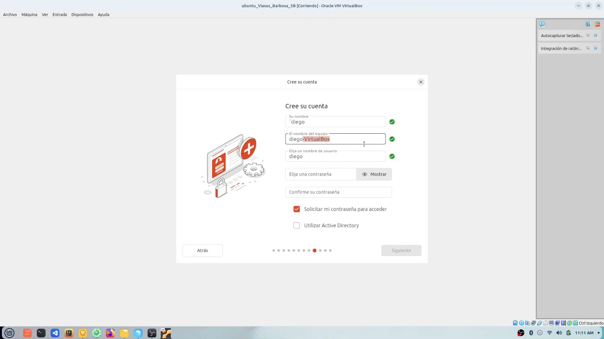
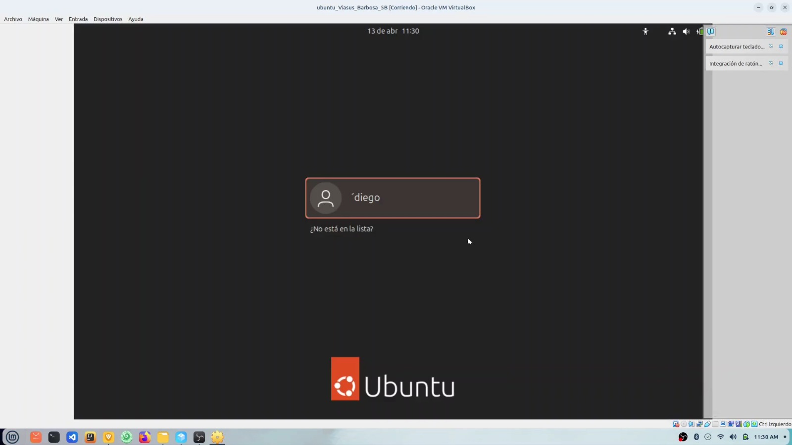

1
Virtual Box
Abrir Virtual Box, seleccionar "Crear nuevo disco virtual" asignar nombre y sistema operativo luego sigue las instrucciones para configurar el tamaño y formato del disco y la memoria ram.

CMD y PowerShell
Soy tu asistente virtual. Te acompañaré durante todo el proceso de instalación de Linux para que no tengas ningún problema.
Abrir Virtual Box, seleccionar "Crear nuevo disco virtual" asignar nombre y sistema operativo luego sigue las instrucciones para configurar el tamaño y formato del disco y la memoria ram.

Tipo: Linux Versión: selecciona la correspondiente No excedas el 50% de la RAM física de tu PC haora el almacenamiento debe ser de tamaño recomendado: 20GB o más.

Haz clic en Iniciar para arrancar la VM. Se abrirá el instalador de Linux luego tienes ques esperar unos segundos luego. Sigue los pasos del asistente:

ya que estas en la instalcion de linux solo tienes que configurar el idioma que quiere para tu linux, luego seleccionas tu zona horaria y luego seleccionas el tipo de teclado que quieres usar.

Despues configura la accesibilidad de ubuntu como: vision,audicion,mecanografia ,señalisar y pulsar, ampliacion.

ya que le allas dado continuar te encontraras con la venta de internet ya que es necesario que te conectes a una red lo secciona tu red y luego dale siguiente.

Ahora te encotraras en la ventana de configuracion de como te gutaria intalar ubuntu, interactiva o automatica hay en cada una te dara informacion de cada una.

Esta opción guía al usuario paso a paso durante todo el proceso que tedara o mostrara dos opciones que es importante conocer en la intalacion de linux, esta la instalacion manual o borrar el disco.

Por finalizar, tienes que ingresar tu nombre de usuario y contraseña para crear tu cuenta de usuario, ojo no se recominda usar contraseñas simples o faciles de recordar.

ya para terminar seleccione el usuario creado e introduzca la contraseña configurada durante la instalación.Con esto Ubuntu quedará completamente instalado y listo para usar dentro de VirtualBox.
